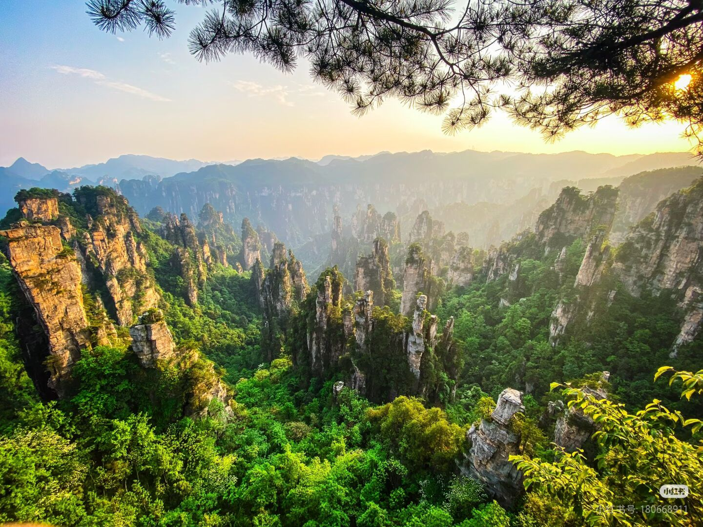
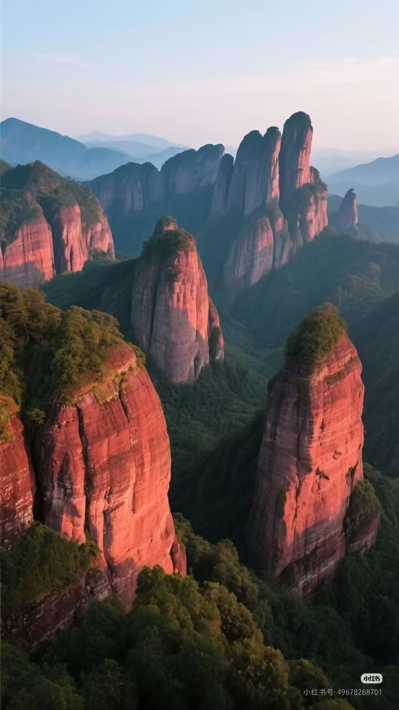

湖南 · 旅游景点

张家界国家森林公园
世界自然遗产，以独特的石英砂岩峰林地貌闻名于世。三千多座奇峰拔地而起，峰林之间溪流潺潺、峡谷幽深，还有天门山、玻璃栈道等网红打卡点，是电影《阿凡达》悬浮山的取景原型，兼具雄、奇、险、秀的自然之美。

凤凰古城
位于湘西土家族苗族自治州，是国家级历史文化名城。沱江穿城而过，岸边吊脚楼依山而建，青石板路蜿蜒曲折。古城内有沈从文故居、虹桥、万名塔等景点，夜晚灯火璀璨，沱江泛舟可尽览古城夜景，尽显湘西的古朴韵味。
岳阳楼
与黄鹤楼、滕王阁并称“江南三大名楼”，因范仲淹《岳阳楼记》名扬天下。楼阁建筑精巧，登楼可俯瞰洞庭湖的浩渺烟波，感受“衔远山，吞长江”的壮阔景象。楼内还陈列着历代名人题咏的碑刻，兼具人文价值与观景体验。

崀山
同为世界自然遗产，以丹霞地貌为核心特色。境内丹霞峰林、巷谷、天生桥等景观丰富，辣椒峰、骆驼峰等象形山石惟妙惟肖，山间植被繁茂，是集自然观光、徒步探险于一体的旅游胜地，展现了丹霞地貌的独特美学价值。